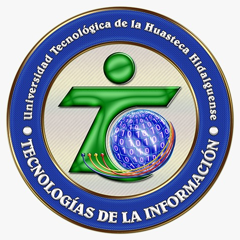

Actualmente estudio en la Universidad Tecnológica de la Huasteca Hidalguense. En la carrera de Ingeniería en Desarrollo y Gestión de Software, precisamente cursando el cuarto cuatrimestre, TSU en Tecnologías de la Información, área Software Multiplataforma.
Elegí esta carrera porque me interesa la tecnología, la programación y aprender cómo se desarrollan diferentes tipos de aplicaciones y sistemas. Una de mis metas es seguir aprendiendo sobre programación y adquirir los conocimientos necesarios para desarrollarme profesionalmente en el área de software.
